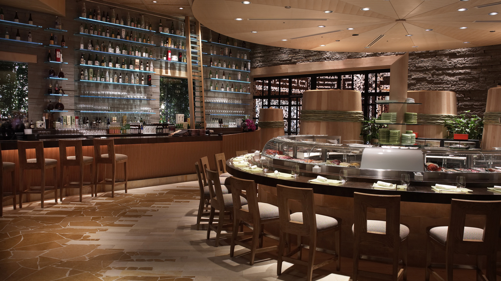

Grand Tomsk – ультрасовременный ресторан в центре города, рассчитанный на 100 посадочных мест. стильный интерьер – работа известного томского дизайнера Евгения Васечкина. цветовая гамма Grand Tomsk построена на контрасте цветов – красного, белого и черного. идея контраста так же пронизывает и меню ресторана. Grand Tomsk приглашает попробовать как местные специалитеты, такие как лосятина, оленина, стерлядь, что очень интересно гостям города, так и превосходную авторскую кухню европейского направления.